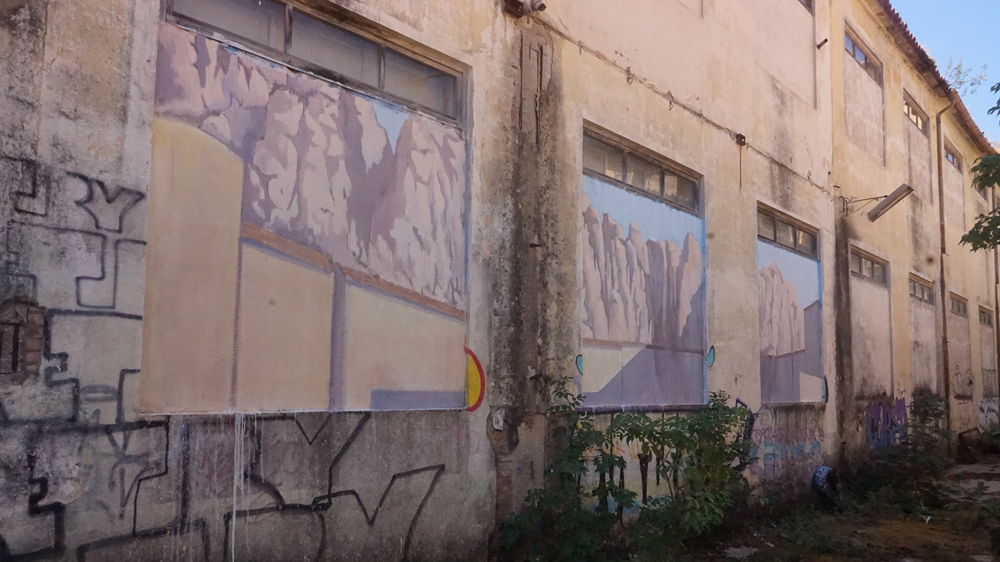

CITTÁ FEDERICO
Poble sec
Dibujos
¿Qué hay detrás
de una ventana?
Arcadia
DPZ
¿Has visto
una ruina luminosa?
Liquen
Sustracciones
Horizonte líquido
Textos
Contacto
¿Qué hay detrás de una ventana?
En el barrio del Poble-sec se encuentra uno de los elementos más representativos del distrito: las tres chimeneas de la antigua central eléctrica de La Canadenca.

Intervención con pintura plástica sobre muro.(2023)